Ayder Yaylası
Ayder Yaylası, Kaçkar Dağları Milli Parkı sınırları içerisinde yer alan tarifi imkansız güzellikte bir yayla.
Biz Rize üzerinden gittik, yolu oldukça güzel ve asfalt.
Milli Park sınırları içerisinde yer aldığı için araç başı ücret alınıyor girişte (10 TL / Araç – 2014)
Yaylanın havası mükemmel, ciğerleriniz oksijenden patlayacak gibi oluyor.
Konakladığım otelin adı Oberj idi, otel başlı başlına eşsiz bir deneyim. Ne demek istediğimi sitesine bakınca daha iyi anlayacaksınız. Oberj fransızca basit usülde konaklama yeri demekmiş.
Bölgede çok sayıda şelale var, kimisi 100 metre yükseklikten düşen şelaleler harikulade.
Ayder’den yukarıya giden yolu takip edince harika yaylalara ulaşıyorsunuz.
Bölgede yapılaşma nispeten az ve doğal.
Yürüyüş rotaları ve imkanlar çok fazla, bir ay boyunca gez gez bitmeyecek rotalar ve gezdiriciler var.
Bölgenin maalesef yemekleri iyi değil.
Bölgenin tadını çıkarmak için en az 3-5 gün ayırmak lazım.
Yaylada bir yandan turistik yaşam devam ederken bir yandan da yöresel yaşam devam ediyor, kaldığımız otelin bitişiğinde bir yayla evi vardı ve yaşam tüm doğallığı ile devam ediyordu.
Bölgedeki ormanlar o kadar gür ki, insan giremeyecek kadar yoğun ağaç popülasyonu var.
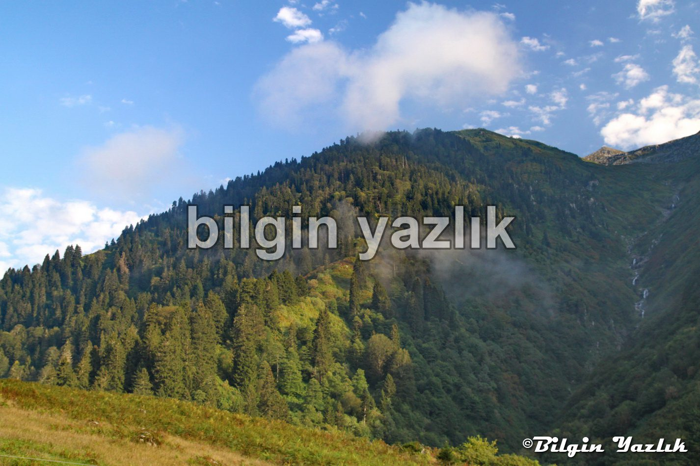
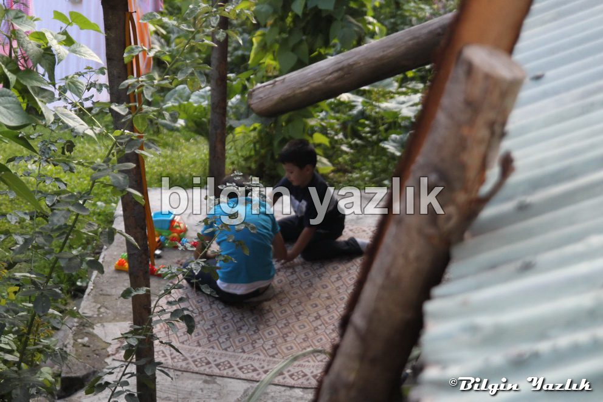
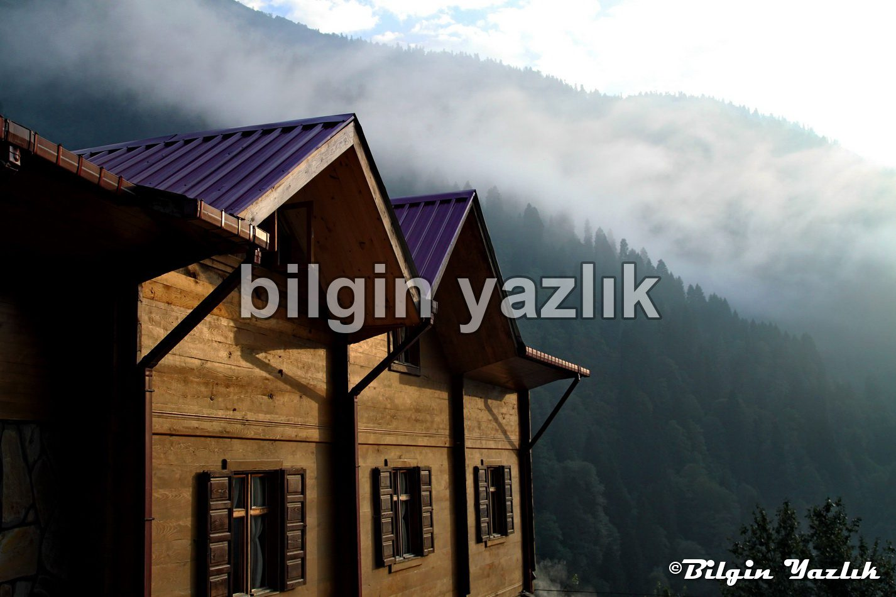
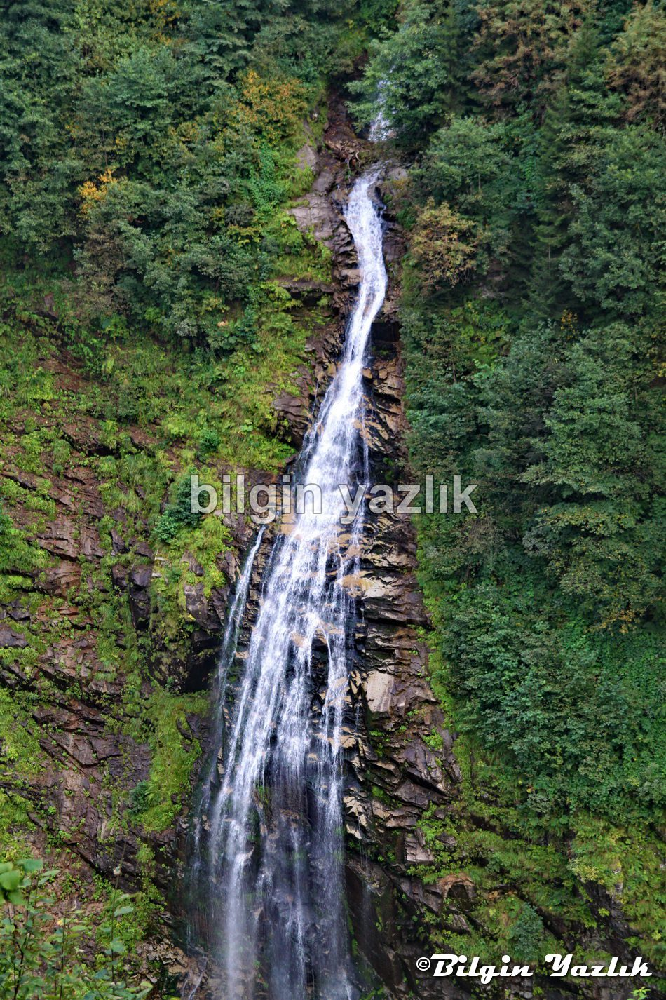
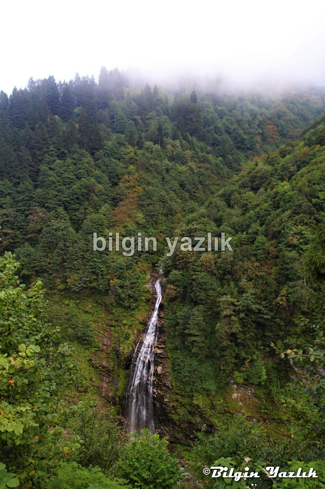
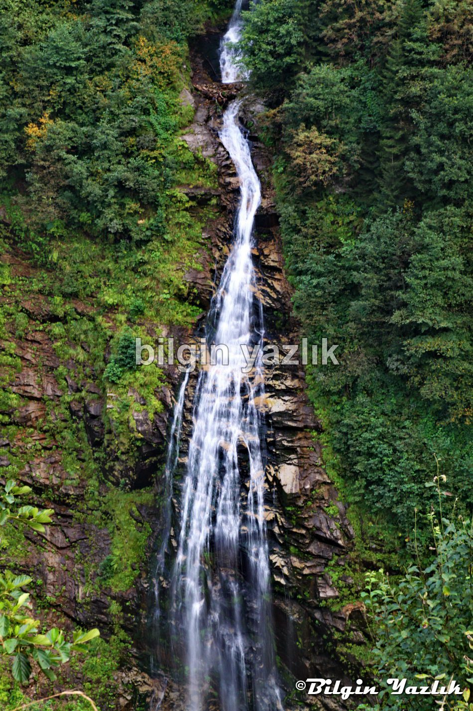
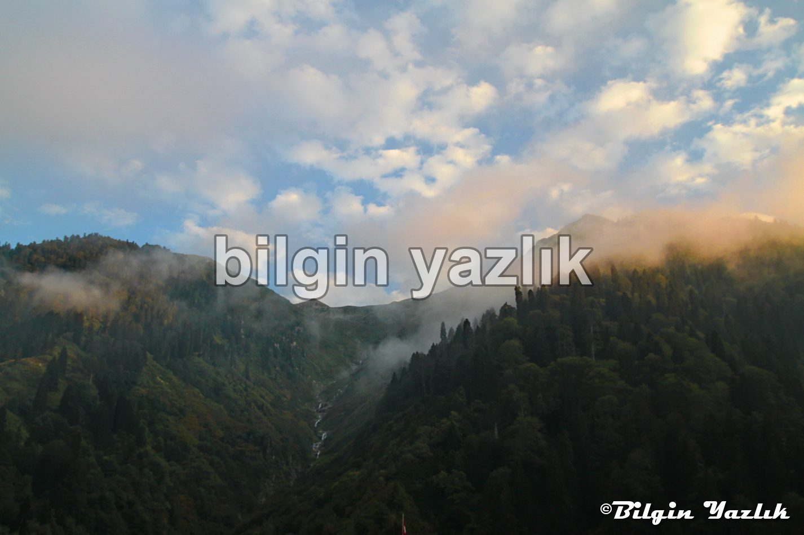
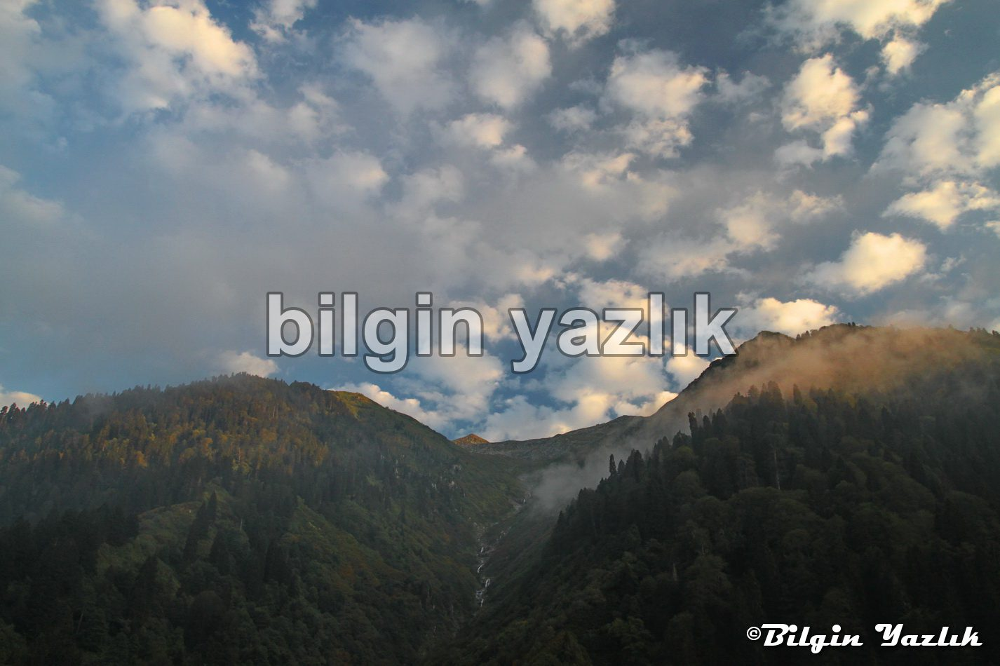
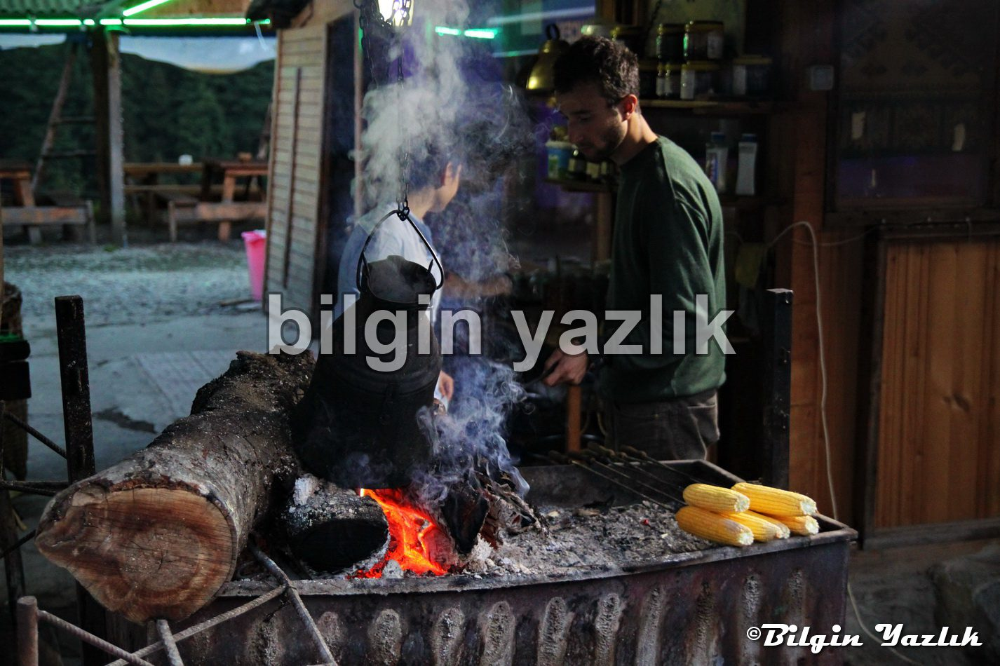
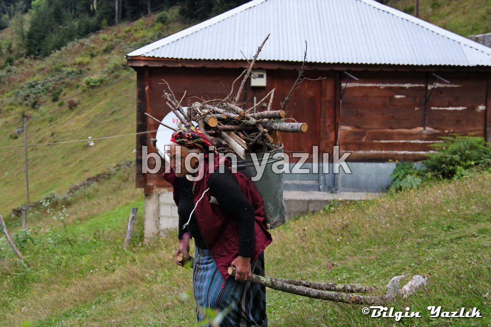
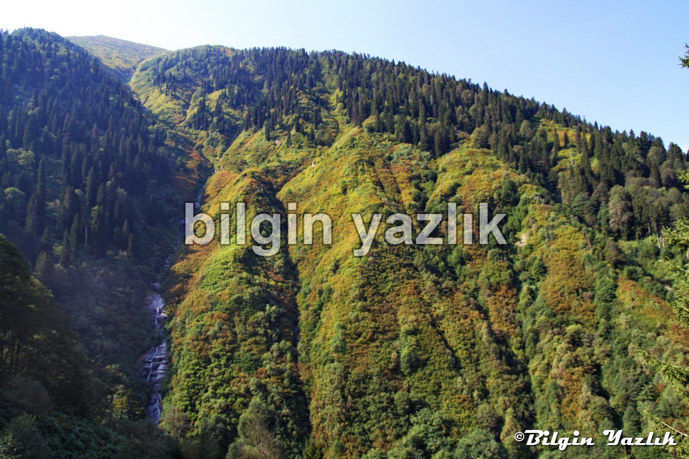
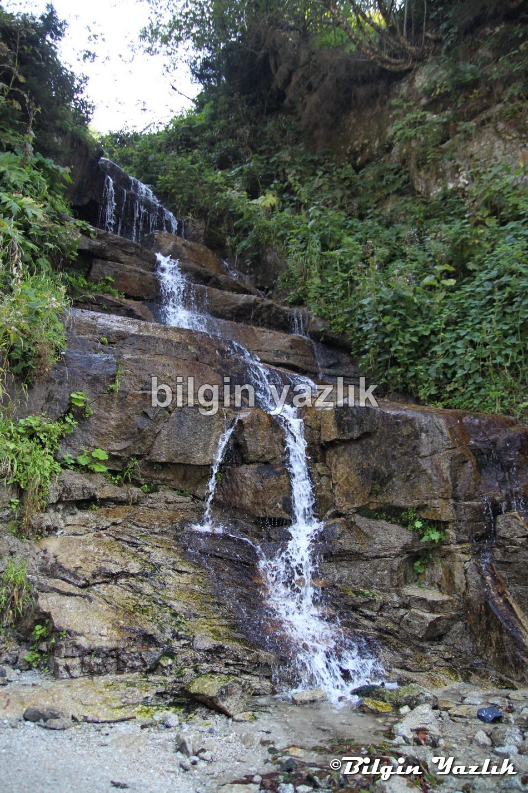
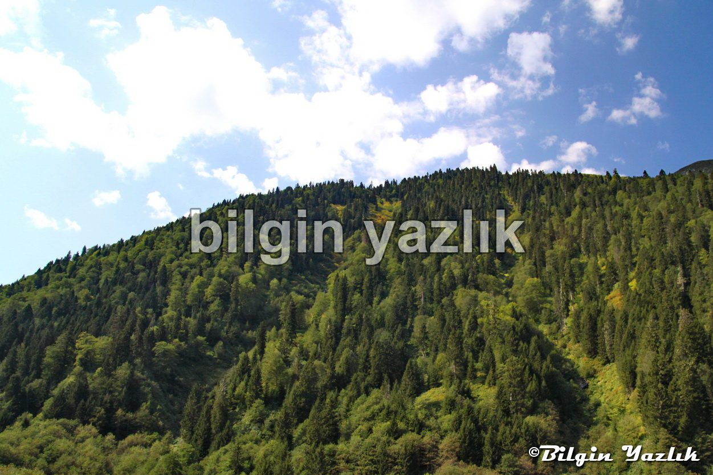
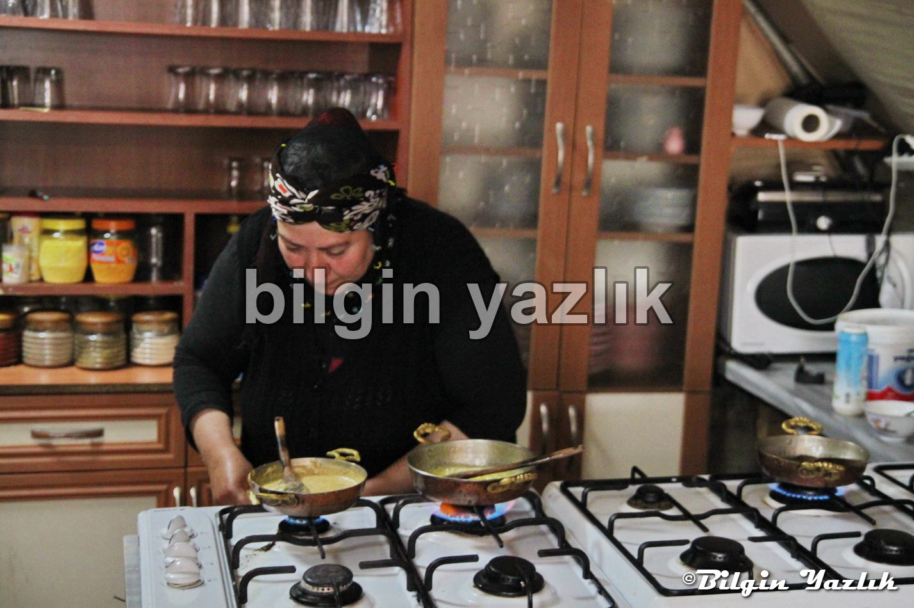
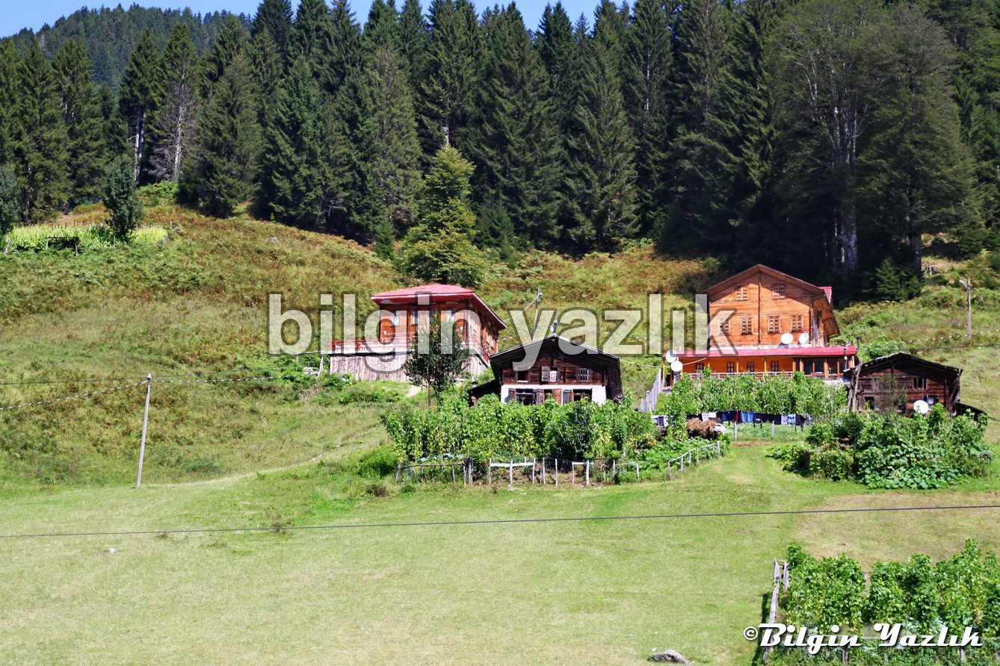
Bu yazı taliyol arşivinden taşınmıştır. · özgün kayıt